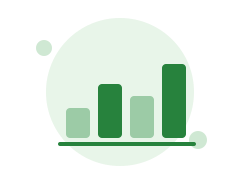

Estadísticas y reportes
Indicadores visuales de ocupación (datos ilustrativos).
Ver reporte semanal

Desde
Hasta
Espacio
Todos los espacios
Laboratorio de Sistemas 1
Laboratorio de Redes
Sala de estudio biblioteca
Ocupación promedio
68%
Porcentaje ficticio para diseño
Reservas del período
124
Conteo ficticio para diseño
Uso por período
Lun
Mar
Mié
Jue
Vie
Sáb
Dom